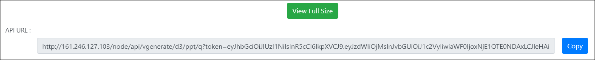
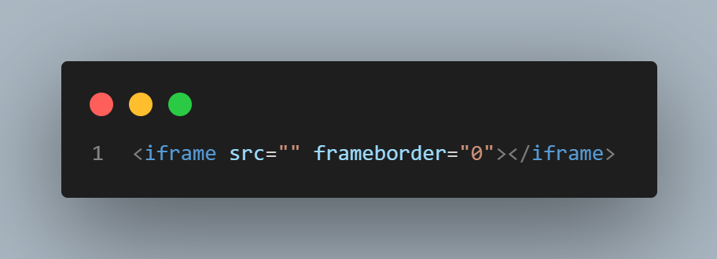
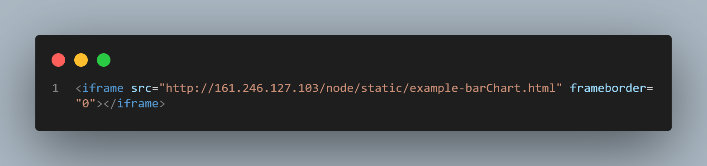

<div class="col-md-12 mt-5">
    <div class="container-fluid mb-4">
        <div class="card my-5">
            <div class="card-header">
                <div class="row mx-2">
                    <h4>เอกสาร API</h4>
                    <div class="ml-auto">
                        <div class="btn-group btn-group-toggle" data-toggle="buttons">
                            <label class="btn btn-secondary">
                                <input type="radio" name="options" id="option1" autocomplete="off" (change)="handleChange()"> ENG
                            </label>
                            <label class="btn btn-secondary active">
                                <input type="radio" name="options" id="option2" autocomplete="off" checked> TH
                            </label>
                        </div>
                    </div>
                </div>
            </div>


            <div class="card-body">
                <div class="offset-md-2 col-md-8">
                    <h5>เกี่ยวกับ</h5><br>
                    <p>เรามี API เพื่อให้คุณสามารถใช้ visualization ของคุณบนเว็บไซต์หรือการนำเสนอ Microsoft PowerPoint</p>
                    <hr><br>
                    <h4>จะใช้ API ของเราได้อย่างไร?</h4>
                    <br>
                    <p>ในหน้าผลลัพธ์หลังจากที่คุณสร้าง visualization แล้ว คุณจะเห็นลิงค์ด้านล่างไฟล์ visualization ของคุณ</p>
                    <figure class="mb-5">
                        
                        <figcaption class="text-center mt-3">API Url</figcaption>
                    </figure>
                    <p>นี่คือ API Url visualization ของคุณ คุณสามารถคลิก "copy" เพื่อคัดลอกลิงก์ไปยังคลิปบอร์ดของคุณหลังจากนั้นคุณสามารถใช้งานได้ในรูปแบบ :</p>
                    <ul>
                        <li><a class="text-primary" (click)="scroll(first)">เว็บไซต์</a></li>
                        <li><a class="text-primary" (click)="scroll(second)">Microsoft PowerPoint</a></li>
                    </ul>
                    <br>
                    <hr>
                    <br>
                    <div #first>
                        <h4>จะใช้ API บนเว็บไซต์ของคุณได้อย่างไร?</h4>
                        <br>
                        <p>คุณสามารถใช้งาน API Url ได้ใน <strong>&lt;embed&gt;</strong> หรือ
                            <strong>&lt;iframe&gt;</strong>.
                            <br>
                            <br>
                            ตัวอย่าง :
                            <br>
                        <figure class="mb-5">
                            
                            <figcaption class="text-center mt-3">&lt;iframe&gt;</figcaption>
                        </figure>
                        <p>คุณสามารถใส่ API Url ใน "src":</p>
                        <br>
                        <figure class="mb-5">
                            
                            <figcaption class="text-center mt-3">&lt;iframe&gt; with API Url</figcaption>
                        </figure>
                        <p>
                            หลังจากนั้นคุณอาจต้องเพิ่ม CSS หรือ Bootstrap เพื่อกำหนดค่าขนาดการแสดงภาพของคุณ
                        </p>
                        <br>
                        <figure class="mb-5">
                            
                            <figcaption class="text-center mt-3">&lt;iframe&gt; with API Url and Bootstrap</figcaption>
                        </figure>
                        <p>
                            ยินดีด้วย! คุณได้ใช้งาน visualization ของคุณบนเว็บไซต์ของคุณเรียบร้อยแล้ว</p>
                        <br>
                        <!--figure class="mb-5">
                            
                            <figcaption class="text-center mt-3">Result on your website</figcaption>
                        </figure-->
                        <iframe style="width: 100%;height:70vh" src="//jsfiddle.net/screwdrivercx/54qfhsmx/16/embedded/html,result/" allowfullscreen="allowfullscreen" allowpaymentrequest frameborder="0"></iframe>
                    </div>

                    <hr>
                    <br>

                    <div #second>
                        <h4>จะใช้ API บน Microsoft PowerPoint ของคุณได้อย่างไร?</h4>
                        <br>
                        <p>คุณจะต้องได้รับส่วนเสริม "Web Viewer" <br>
                            บนแถบเครื่องมือคลิก "แทรก" จากนั้น "รับ Add-in" หลังจากนั้นค้นหา "Web Viewer"
                        </p>
                        <figure class="mb-5">
                            
                            <figcaption class="text-center mt-3">Web viewer</figcaption>
                        </figure>
                        เมื่อคุณเพิ่ม Web Wiewer แล้ว คุณสามารถเพิ่ม Web Viewer บนสไลด์นำเสนอของคุณจากนั้นวาง URL ของ API เพื่อแสดง visualization
                        <br>
                    </div>

                </div>
            </div>
        </div>
    </div>
</div>